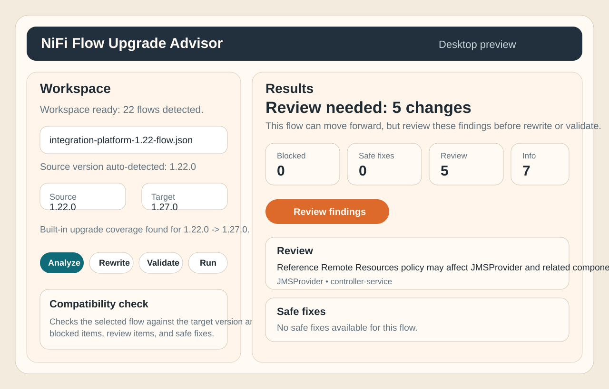
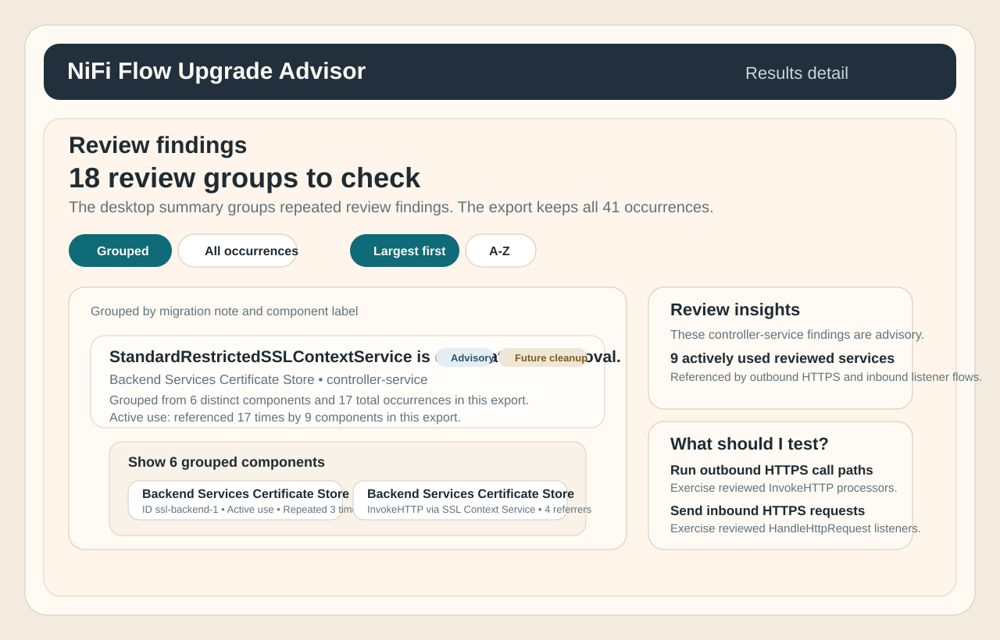

01
Open the app and scan your workspace
The app detects likely flows, optional target component lists, and the built-in upgrade coverage available in the repo.
Desktop Guide
The desktop app is the easiest way to use the product. It scans a workspace, detects likely flows, suggests the built-in upgrade coverage, and walks you through analyze, rewrite, validate, and run.
Quick Start
The app detects likely flows, optional target component lists, and the built-in upgrade coverage available in the repo.
If the flow carries embedded version metadata, the app fills it in. If not, it tells you to enter the source version manually.
See blockers, review items, safe fixes, and info notes before anything changes.
The app tells you when no safe rewrites are available, and rewrite writes a separate upgraded artifact instead of overwriting the original flow.

Scan the repo, choose a flow, and let the app handle the upgrade-path plumbing for you.

Blocked, review, safe fixes, and info are broken out clearly, with next actions and rewrite previews.
Use validate when you want to confirm the target version, installed component types, or live target readiness after rewrite.
Use the CLI for CI, scripted workflows, GitOps, and advanced debugging. The desktop app is just a wrapper around the same engine and reports.